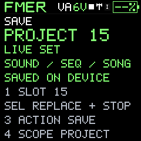
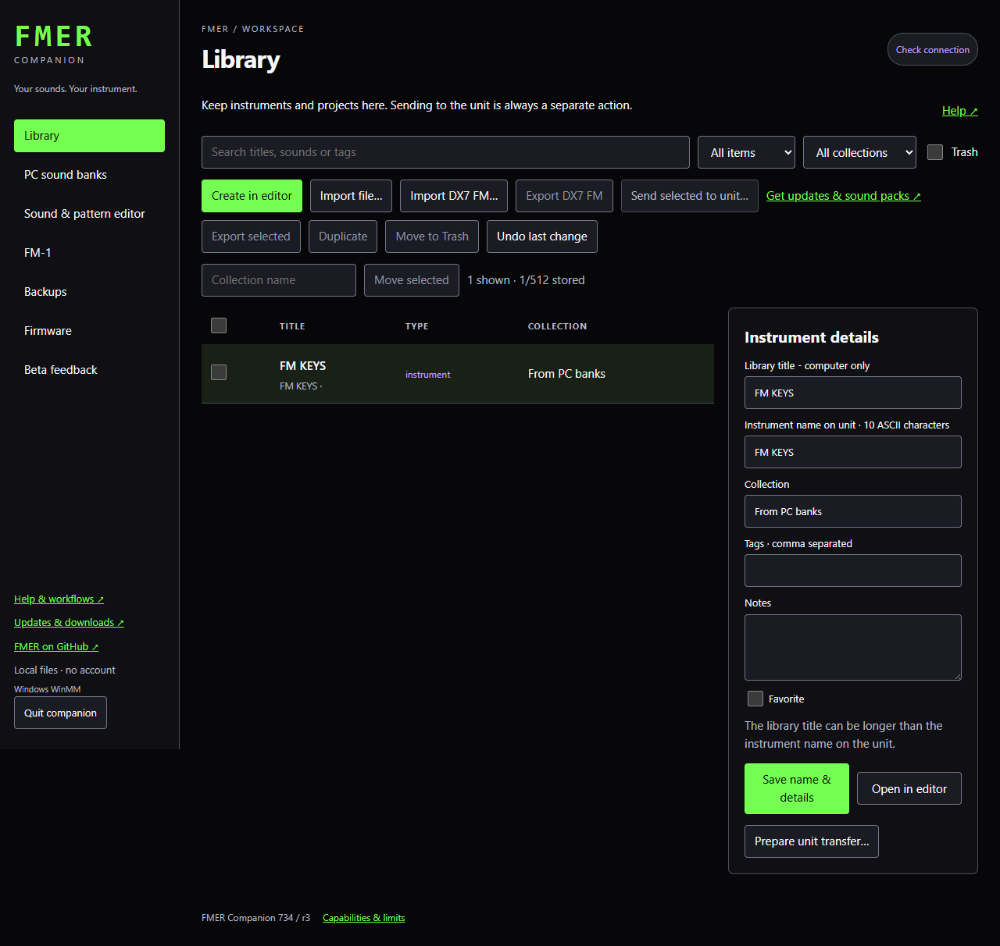

Patterns and performance
Save and recall projects
A project stores arrangement state and references to sounds, not four immutable sound copies.
The unit has 16 project destinations, separate from its 128 instrument slots. Projects contain the working sound/state, 16 patterns, track assignments, chain and mixer settings. Each track's sound reference points to an instrument slot. Replacing that slot later can change a recalled project.
- Save edited instruments first.
- Assign their slots to the tracks.
- Press SAVE and select Project with K4; select the destination with K1.
- Choose Save or Load with K3 and confirm with SEL.
In the companion, project titles are catalog metadata. Current firmware does not expose independent on-device project-name fields. A project captured from the PC Editor can include snapshots of referenced sounds found in the PC banks. These are explicitly PC snapshots, not proof of what currently occupies the unit. A basic device project pull contains the native project record.
Sending a project record does not silently overwrite all its referenced instruments. Review or transfer those sounds separately to their expected slots. A complete unit backup is the reliable way to preserve the actual sound and project banks together. Standard DX7 banks, native FMER records, companion catalogs, PC bank files and unit backups are different formats and should not be renamed to impersonate one another.
Use Extract embedded sounds in project details to create independently editable Library instruments from the included snapshots. Their notes retain the original slot references for deliberate deployment.
733 save compatibility
733 uses Native11 records of the same 4,000-byte size. Existing saves migrate without a bank reset. Chorus/phaser character now survives save/recall. Older firmware and tools cannot import Native11 files; keep your original backups if you need to return to an older version.
Deploy a project bundle
Send project with sounds appears when Library project details contain embedded instruments. It opens one review containing the project and those sound destinations. Instruments are written before the project, after a complete destination backup. Choose the same instrument slots referenced by the project; this action does not rewrite references. Prepare unit transfer sends only the project record. A failed multi-slot operation can leave earlier writes completed; the operation record identifies them and retains the full pre-transfer backup.


